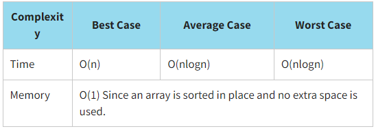
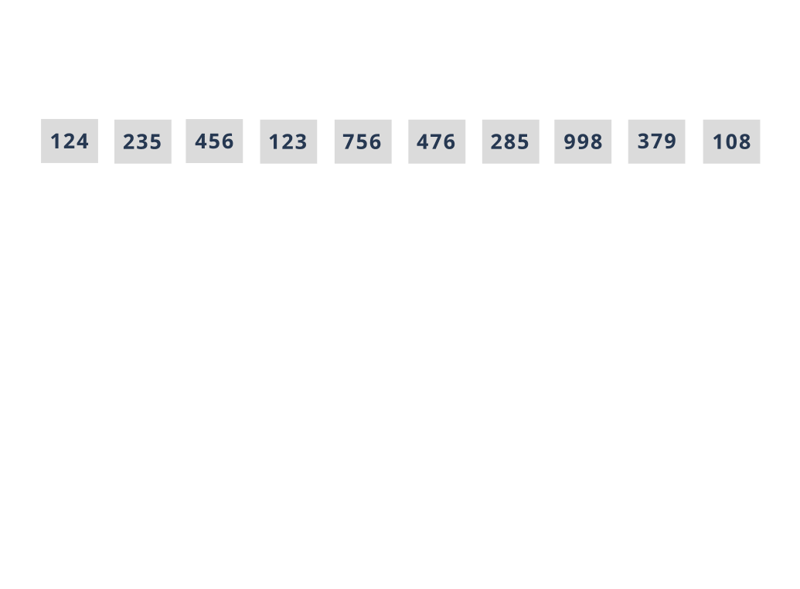

Heap Sorting
Heapsort is a comparison-based sorting technique based on the binary heap data structure. This is similar to sorting by selection, where we first find the minimum element and place the minimum element in the beginning. However, in this case, the largest elements are usually placed in the nodes. We repeat the same process for the rest of the elements. Heapsort combines the time efficiency of merge sort and the storage efficiency of quicksort which will be discussed below.
You know that a complete binary tree is a binary tree in which every level, except perhaps the last one, is completely filled, and all nodes are located as far left as possible. A heap data structure is a binary tree with a specific structural orientation, often known as a complete binary tree.
Heapsort is NOT a stable sorting algorithm because equal elements are rearranged in the final sort order with relation to one another.
Let us sort our array of library cards using the insertion sort. Recall that the values of library cards are {124,235,456,123,756,476,285,998,379,108}.
Look at the program implementation of the insertion sort.
JavaScript realisation with Recursin Method
function heapify(arr, n, i) {
let largest = i;
let left = 2 * i + 1;
let right = 2 * i + 2;
if (left < n && arr[i] < arr[left]) {
largest = left;
}
if (right < n && arr[largest] < arr[right]) {
largest = right;
}
if (largest != i) {
const temp = arr[largest];
arr[largest] = arr[i];
arr[i] = temp;
heapify(arr, n, largest);
}
}
function heapSort(arr) {
for (let i = Math.floor(arr.length / 2); i >= 0; i--) {
heapify(arr, arr.length, i);
}
for (let i = arr.length - 1; i >= 1; i--) {
const temp = arr[0];
arr[0] = arr[i];
arr[i] = temp;
heapify(arr, i, 0);
}
}
const initData = [124, 235, 456, 123, 756, 476, 285, 998, 379, 108];
console.log(`Initial array:`, initData);
heapSort(initData);
console.log(`Sorted array:`, initData);
The result:
Initial array: [ 124, 235, 456, 123, 756, 476, 285, 998, 379, 108 ]
Sorted array: [ 108, 123, 124, 235, 285, 379, 456, 476, 756, 998 ]
You should choose the heap sort when:
- an array is partially sorted
- an array to be sorted is relatively small
- a simple sorting implementation is desired
- there are limits on memory usage
Additional information can be found here
Click here or here to see a more detailed explanation of the heapsort.